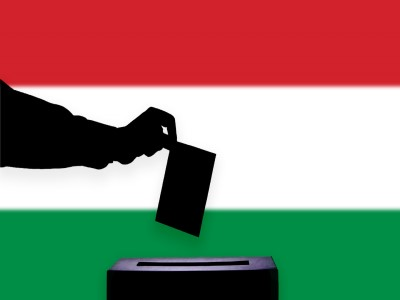

Főoldal
Névadónk
Hírek
Felvételi 2023
Választások 2022
Megalakultunk!
Rajz pályázat
Órarend
Szakok
Kerítésépítő és migráncsfogó szak
Közpénzlopó szak
Állítsuk meg Brüsszelt szak
Álhír terjesztő szak
Stadionépítő szak
Elérhetőségeink
Lezajlott a 2022-es választás Hazánkban!
2022. április 3.án lezajlott a magyarországi népszavazás és választás.
Néhány érdekes információ:
A részvételi arány: 70,21%
Mandátumok: Fidesz: 67,5%
Betöltés
